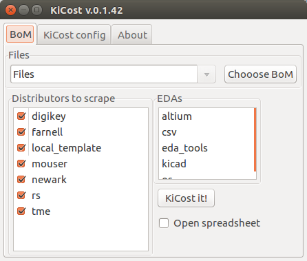

Welcome to kicost’s documentation!¶
Contents:
KiCost¶


KiCost script, also with Graphical User Interface - GUI, under MIT license for generate part-cost spreadsheets for circuit boards developed with KiCad and others EDAs.
Free software: MIT license
Documentation: https://hildogjr.github.io/KiCost/.
Quick start: https://www.youtube.com/watch?v=AeccxROpDfY.
KiCost is powered by the Kitspace PartInfo API. Partinfo hooks into paid-for 3rd party services. If you find KiCost useful please donate to the Kitspace Open Collective. If Kitspace doesn’t receive enough donations then this free service will have to be shut down.

Features¶
Easy installation via pip (see on documentation folder).
Processes the BOM XML file from your KiCad schematic to create a part-cost spreadsheet by scraping the web sites of several popular distributors for price and inventory data. (You can also enter your own quantity-adjusted pricing data for specialized parts or those not found at the supported distributors.);
Processes also BOM files from Altium, Proteus, Eagle, Upverter and hand made CSVs;
The spreadsheet contains quantity-adjusted pricing from each distributor for individual parts and the total board;
Enter the number of boards to be built in a spreadsheet cell and all the pricing for the total board and individual parts is updated;
The spreadsheet also shows the current inventory on-hand for each part at each distributor;
Enter the quantity of each part that you want to purchase from each distributor and lists of part numbers and quantities will appear in formats that you can cut-and-paste directly into the website ordering page of each distributor.


Installation¶
This is a Python package, so you’ll need to have Python installed to use it.
Windows without KiCad¶
KiCad has Python, but if you don’t have KiCad you can download a Python installer from Anaconda, Active State, or even WinPython.
Once you have Python, you can install this package by opening a terminal window and typing the command:
$ easy_install kicost
Or:
$ pip install kicost
Windows with KiCad¶
Open a Power Shell window as administrator.
2. Now you need to first add KiCad binaries to your PATH. For a temporal addition you can use:
prompt> $env:Path += ";C:\Program Files\KiCad\bin"
This assumes you installed KiCad in the default place. For a persistent solution search on internet “How to Add to Windows PATH Environment Variable”.
3. Install the wheel package. Needed to workaround bugs on the Python included with KiCad:
prompt> pip install wheel
4. Now install KiCost, for the last stable release:
prompt> pip install kicost
If you want to install the current development code you must install GIT. After installing GIT:
prompt> pip install git+https://github.com/hildogjr/KiCost.git
Linux¶
If you’re using linux, you probably already have Python.
On Linux, for a full install procedure on Python3, use (for Python2, replace pip3 by pip on each command):
$ sudo apt-get install python3-pip # Or ``python-pip`` to install PIP on Python2.
$ sudo -H pip3 install kicost # Install KiCost from PyPI.
To install the graphical dependence used by KiCost GUI (only needed if KiCad is not installed):
$ sudo -H pip3 install wxpython
or
$ sudo -H pip3 install -U -f https://extras.wxpython.org/wxPython4/extras/linux/gtk3/ubuntu-16.04 wxPython # For Ubuntu 16.04
$ kicost # Execute KiCost without input arguments to initialize the GUI.
To install the last code version from GitHub, use:
$ sudo apt-get install git # It's necessary to have Git installed.
$ sudo -H pip3 install -U git+https://github.com/hildogjr/KiCost.git
Usage¶
KiCost’s main use is generating part-cost spreadsheets for circuit boards developed with KiCad as follows:
For each part in your schematic, create a field called
manf#and set the field value to the manufacturer’s part number. (You can reduce the effort of adding this information to individual parts by placing themanf#field into the part info in the schematic library so it gets applied globally.) The allowable field names for part numbers are:mpn pn p# part_num part-num part# manf_num manf-num manf# man_num man-num man# mfg_num mfg-num mfg# mfr_num mfr-num mfr# mnf_num mnf-num mnf#
Distributors stock code can be also used through the specific field name listed bellow and they are prioritized to get the part information.
- Digi-Key: digikey# digikey_# digikey-# digikeypn# digikey_pn# digikey-pn#
digikeypn …
digikeyvendor# …
digikeynum …
digikeyvp# …
digikeyvpn …
Mouser: mouser# …. …
Be careful if the part have a manf# or distributor code with the ,, ; or \ characters,
these have specific propose as shown in Parts With Subparts. They have to be preceded by \,
example, for the NUP1301,215 code, use NUP1301\,215.
Output a BOM from your KiCad schematic. This will be an XML file such as
schem.xml.Process the XML file with KiCost to create a part-cost spreadsheet named
schem.xlsxlike this:kicost -i schem.xml
Open the
schem.xlsxspreadsheet using Microsoft Excel, LibreOffice Calc, or Google Sheets. Then enter the number of boards that you need to build and see the prices for the total board and individual parts when purchased from several different distributors (KiCost currently supports Arrow, Digi-Key, Mouser, Newark, Farnell, RS and TME). All of the pricing information reflects the quantity discounts currently in effect at each distributor. The spreadsheet also shows the current inventory of each part from each distributor so you can tell if there’s a problem finding something and an alternate part may be needed.Enter the quantity of each part that you want to purchase from each distributor. Lists of part numbers and quantities will appear that you can cut-and-paste directly into the website ordering page of each distributor.
Examples¶
Most people just want some examples of using KiCost so they don’t have to read a bunch of documentation, so here they are!
To create a cost spreadsheet from an XML file exported from KiCad:
kicost -i schem.xml
To create a cost spreadsheet from within KiCad, use the
Tools => Generate Bill of Materials... menu item and then enter the
following in the Command line field:
kicost -i %I
To create a cost spreadsheet direct from the KiCad using the user definitions (by graphical interface last runned):
To create a cost spreadsheet from within KiCad using the previous, use the
Tools => Generate Bill of Materials... menu item and then enter the
following in the Command line field:
kicost -i %I --user
To place the spreadsheet in a file with a different name than the XML file:
kicost -i schem.xml -o new_file.xlsx
To overwrite an existing spreadsheet:
kicost -i schem.xml -w
To get costs from only a few distributors:
kicost -i schem.xml --include digikey mouser
To exclude one or more distributors from the cost spreadsheet:
kicost -i schem.xml --exclude digikey farnell
To include parts that are only used in a particular variant of a design:
kicost -i schem.xml --variant V1
To create a cost spreadsheet from a CSV file of part data:
kicost -i schem.csv --eda_tool csv
To read and merge different projects BOMs, even those from different EDA tools:
kicost -i bom1.xml bom2.xml bom3.csv --eda kicad altium csv
To access KiCost through a graphical user interface, just use the kicost command without parameters.
Custom BOM list¶
In addition to XML files output by EDA tools, KiCost also accepts CSV files as a method for getting costs of preliminary designs or older projects. The format of the CSV file is as follows:
A single column is interpreted as containing manufacturer part numbers.
Two columns are interpreted as the manufacturer’s part number followed by the part reference (e.g.,
R4).Three columns are interpreted as the quantity followed by the part number and reference.
You can also arrange the columns arbitrarily by placing a header in the first line
of the CSV file that labels the particular
columns as manufacturer’s part numbers (manf#), quantities (qty), and
part references (refs).
Custom Part Data¶
The price breaks on some parts can’t be obtained automatically because:
they’re not offered by one of the distributors whose web pages KiCost can scrape/query, or
they’re custom parts.
For these parts, you can manually enter price information as follows:
Create a new field for the part named
kicost:pricingin either the schematic or library.For the field value, enter a semicolon-separated list of quantities and prices which are separated by colons like so:
1:$1.50; 10:$1.00; 25:$0.90; 100:$0.75
(You can put spaces and currency symbols in the field value. KiCost will strip everything except digits, decimal points, semicolons, and colons. Others currency are acepted by use of the standardize ISO 4217 alpha3 format, e.g.
USD1.50,EUR1.00)
You can also enter a link to documentation for the part using a field named kicost:link.
The value of this field will be a web address like:
www.reallyweirdparts.com/products/weird_product.html
After KiCost is run, the price information and clickable link to documentation for the part are shown in a section of the spreadsheet labeled Local. If you want to associate the pricing, documentation link and/or available quantity to a particular source or distributor, just place an extra label within the field key to indicate the source like so:
kicost:My_Weird_Parts:pricing
kicost:My_Weird_Parts:link
kicost:My_Weird_Parts:avail
Then the pricing and documentation link for that part will appear in a section of the spreadsheet labeled My_Weird_Parts.
You can have as many sources for parts as you want, and a part may have multiple sources.
Part Grouping¶
KiCost groups similar parts together and places their information on a single line of the generated spreadsheet. For parts to be grouped, they must:
come from the same library (e.g., “device”),
be the same part (e.g., “R”),
have the same value (e.g., “10K” but note that this would not match “10000” or “10K0”), and
have the same footprint (e.g., “Resistors_SMD:R_0805_HandSoldering”).
To reduce your effort, KiCost will also propagate pricing data among grouped parts. For example, if you place a hundred 0.1 uF decoupling capacitors in 0805 packages in a schematic, you need only assign a manufacturer’s number and/or pricing data to one of them and it will be applied to the rest.
There are several cases that are considered when propagating part data:
If only one of the parts has data, that data is propagated to all the other parts in the group.
If two or more parts have data but it is identical, then that data is propagated to any of the parts in the group without data.
If two or more parts in the group have
differentdata, then any parts without data are left that way because it is impossible to figure out which data should be propagated to them.
It is possible that there are identical parts in your schematic that have differing data and, hence, wouldn’t be grouped together. For example, you might store information about a part in a “notes” field, but that shouldn’t exclude the part from a group that has none or different notes. There are three ways to prevent this:
Use the
--ignore_fieldscommand-line option to make KiCost ignore part fields with certain names:kicost -i schematic.xml --ignore_fields notes
Use the
--group_fieldsoption to allow grouping of parts even if they have different field values, but then display the parts separately in the spreadsheet using a multiline cell. The following example will group parts that are identical except for having different footprints, but will display them individually:kicost -i schematic.xml --group_fields footprint
Precede the field name with a “:” such as
:note. This makes KiCost ignore the field because it is in a different namespace.
Parts With Subparts¶
Some parts consist of two or more subparts.
For example, a two-pin jumper might have an associated shunt.
This is represented by placing the part number for each subpart into the manf# field, separated
by a “|” (ASCII 124) like so: JMP1A45|SH3QQ5. The manf (manufacturer name) also allows this division.
You can leave a position empty or replicate the last one (use “~” character to replicate the last one).
Each subpart will be placed on a separate row of the spreadsheet with its associated part number
and a part reference created from the original part reference adding “#” and a number.
For example, if the two-pin jumper had a part reference of JP6, then there
would be two rows in the spreadsheet containing data like this:
JP6#1 ... JMP1A45
JP6#2 ... SH3QQ5
You can also specify multipliers for each subpart by either prepending or appending
the subpart part number with a multiplier separated by a “:”.
To illustrate, a 2x2 jumper paired with two shunts would have a part number of
JMP2B26| SH3QQ5:2.
The multiplier can be either an integer, float or fraction
and it can precede or follow the part code (e.g. SH3QQ5:2 or 2:SH3QQ5).
In the case of distributor# and manf# for one sub part only, the other should have a blank
value discriminated. As example:
manf# = 0022232061|0022012067| 6: 08-50-0114| LA 55-P| lv 25-P
digikey# = ||| 398-1010-ND| 398-1019-ND
rs# = ||| 180-7357| 286-361
See that just the last two manf# have a corresponding digikey# and rs# catalogue code.
This mechanism is applied to the following fields: manf, manf# and any DISTRIBUTOR# field.
A similar mechanism is applied to the pricing field, but the multiplier mechanism isn’t applied.
If you want to process more fields add them using the --split_extra_fields option.
For compatibility with older versions of KiCost you can also use “,” or “;” as separator for manf,
manf# and any DISTRIBUTOR# field.
Schematic Variants¶
There are cases where a schematic needs to be priced differently depending upon the context. For example, the price of the end-user circuit board might be needed, but then the price for the board plus additional parts for test also has to be calculated.
KiCost supports this using a variant field for parts in the schematic in
conjunction with the --variant command-line option.
Suppose a circuit has a connector, J1, that’s only inserted for certain units.
If a field called variant is added to J1 and given the value V1,
then KiCost will ignore it during a normal cost calculation.
But J1 will be included in the cost calculation spreadsheet if you run KiCost like so:
kicost -i schematic.xml --variant V1
In more complicated situations, you may have several circuit variants, some of which
are used in combination.
The --variant option will accept a regular expression as its argument
so, for example, you could get the cost of a board that includes circuitry for
both variants V1 and V2 with:
kicost -i schematic.xml --variant "(V1|V2)"
A part can be a member of more than one variant by loading its variant field
with a list such as “V1, V2”.
(The allowed delimiters for the list are comma (,), semicolon (;), slash (/), and space ( ).)
The part will be included in the cost calculation spreadsheet if any of its variants matches
the --variant argument.
Old-Style Variants¶
KiCost supports another way of specifying the variant associated with a part.
Using the example from above, labeling the part number for J1 as
kicost.v1:manf# will assign it to the v1 variant.
This method is not as flexible as using the variant field and may be removed
in future versions of KiCost.
“Do Not Populate” Parts¶
Some parts in a schematic are not intended for insertion on the final board assembly.
These “do not populate” (DNP) parts can be assigned a field called DNP or NOPOP.
Setting the value of this field to a non-zero number or any string will cause this part
to be omitted from the cost calculation spreadsheet. Note that empty strings will be
interpreted as zero (i.e. kicost.VARIANT:dnp="" and kicost.VARIANT:dnp=" " will
be interpreted as kicost.VARIANT:dnp="0")
Showing Extra Part Data in the Spreadsheet¶
Sometimes it is desirable to show additional data for the parts in the
spreadsheet.
To do this, use the --fields command-line option followed by the names of the
additional part fields you want displayed in the global data section of the
of the spreadsheet:
kicost -i schematic.xml --fields fld1 fld2
Visual Cues in the Spreadsheet¶
In addition to the part cost information, the spreadsheet output by KiCost provides additional cues:
The
Manf#cell is colored to warning the part lifecyle status:Purple if the part is asign as ‘obsolete’ or ‘not recommended for new designs’ by one of the distributors accessed.
The
Qtycell is colored to show the availability of a given part:Red if the part is unavailable at any of the distributors.
Orange if the part is available, but not in sufficient quantity.
Yellow if there is enough of the part available, but not enough has been ordered.
Gray if no manufacturer or distributor part number was found in the BOM file.
The
Availcell is colored to show the availability of a given part at a particular distributor:Red if the part is unavailable.
Orange if there is not sufficient quantity of the part available.
The
Purchcell is colored to check the user purchase cart validity:Red if try to purchase more than avaliable part
Yellow if try to purchase less than the minimum order quantity
The
Unit$andExt$in each distributor cell is colored green to indicate the lowest price found across all the distributors.
Selecting Distributors to Scrape/Query¶
You can get the list of part distributors that KiCost scrapes/query for data like this:
kicost --show_dist_list
Distributor list: digikey farnell local_template mouser newark rs tme
Since you may not have access to some of the distributors in that list, you can restrict scraping from only a subset of them as follows:
kicost -i schem.xml --include digikey mouser
Or you can exclude some distributors require the price of the rest:
kicost -i schem.xml --exclude farnell newark
Command-Line Options¶
usage: kicost [-h] [-v] [--info] [-i FILE.XML [FILE.XML ...]] [-o [FILE.XLSX]]
[-f NAME [NAME ...]] [--translate_fields NAME [NAME ...]]
[--variant VARIANT [VARIANT ...]] [-w] [-q]
[--ignore_fields NAME [NAME ...]]
[--group_fields NAME [NAME ...]] [--debug [LEVEL]]
[--eda {kicad,altium,csv} [{kicad,altium,csv} ...]]
[--show_dist_list] [--show_eda_list] [--no_collapse]
[--show_cat_url] [-e DIST [DIST ...]]
[--include DIST [DIST ...]] [--no_price] [--currency [CURRENCY]]
[--gui FILE.XML [FILE.XML ...]] [--user] [--setup] [--unsetup]
Build cost spreadsheet for a KiCAD project.
optional arguments:
-h, --help show this help message and exit
-v, --version show program's version number and exit
--info Show program' and library information and version.
-i FILE.XML [FILE.XML ...], --input FILE.XML [FILE.XML ...]
One or more schematic BOM XML files.
-o [FILE.XLSX], --output [FILE.XLSX]
Generated cost spreadsheet.
-f NAME [NAME ...], --fields NAME [NAME ...]
Specify the names of additional part fields to extract
and insert in the global data section of the
spreadsheet.
--translate_fields NAME [NAME ...]
Specify or remove field translation (--translate X1 Y1
X2 Y2 X3 ~, translates X1 to Y1 and X2 to Y2 and
remove X3 for the internal dictionary).
--variant VARIANT [VARIANT ...]
schematic variant name filter using regular expression.
-w, --overwrite Allow overwriting of an existing spreadsheet.
-q, --quiet Enable quiet mode with no warnings.
--ignore_fields NAME [NAME ...]
Declare part fields to ignore when reading the BoM
file.
--group_fields NAME [NAME ...]
Declare part fields to merge when grouping parts.
--debug [LEVEL] Print debugging info. (Larger LEVEL means more info.)
--eda {kicad,altium,csv} [{kicad,altium,csv} ...]
Choose EDA tool from which the XML BOM file
originated, or use csv for .CSV files.
--show_dist_list Show list of distributors that can be scraped for cost
data, then exit.
--show_eda_list Show list of EDA tools whose files KiCost can read,
then exit.
--no_collapse Do not collapse the part references in the
spreadsheet.
--show_cat_url Do not suppress the catalogue links into the catalogue
code in the spreadsheet.
-e DIST [DIST ...], --exclude DIST [DIST ...]
Excludes the given distributor(s) from the scraping
process.
--include DIST [DIST ...]
Includes only the given distributor(s) in the scraping
process.
--no_price Create a spreadsheet without scraping part data from
distributor websites.
--currency [CURRENCY]
Define the priority currency. Use the ISO4217 for
currency (`USD`, `EUR`). Default: `USD`.
--gui FILE.XML [FILE.XML ...]
Start the GUI to run KiCost passing the file parameter
give by "--input", all others parameters are ignored.
--user Run KiCost on terminal using the parameters in the GUI
memory, all passed parameters from terminal take
priority.
--setup Run KiCost integration (with KiCad and OS)
configuration script.
--unsetup Undo the KiCost integration.
Configuration file¶
The configuration is read from ~/.config/kicost/config.yaml. Where ~ is the user’s directory.
You can specify the name of the configuration file from the command line using -c or –config options.
Currently the main purpose of this file is to configure the distributors APIs.
The format is YAML and here is an example:
# KiCost configuration file
kicost:
version: 1
# Cache Time To Live in days, -1 is forever
# Default is 7
cache_ttl: -1
# Base directory for the APIs caches
# cache_path: ~/.cache/kicost
APIs:
Digi-Key:
# Digi-Key Client ID for a registered APP
# client_id: XXXXXXXXXXXXXXXXXXXXXXXXXXXXXXXX
# Digi-Key Client Secret for a registered APP
# client_secret: XXXXXXXXXXXXXXXX
# Use the sandbox server, doesn't count the usage, but returns old data
# sandbox: false
# Only enabled if the client_id and client_secret are defined
# enable: true
# Directory for the APIs caches
# cache_path: ~/.cache/kicost/Digi-Key
# Exclude products offered by 3rd party associates (marketplace)
# exclude_market_place_products: false
Element14:
# Element14 includes: Farnell, Newark and CPC
# Element14 Product Search API key
# key: XXXXXXXXXXXXXXXXXXXXXXXX
# Only enabled if the key is defined
# enable: false
# Country used for Farnell queries.
# Supported countries: BG,CZ,DK,AT,CH,DE,IE,IL,UK,ES,EE,FI,FR,HU,IT,LT,
# LV,BE,NL,NO,PL,PT,RO,RU,SK,SI,SE,TR,CN,AU,NZ,HK,SG,MY,PH,TH,IN,KR,VN
# farnell_country: UK
# Country used for Newark queries.
# Supported countries: US,CA,MX
# newark_country: US
# Country used for CPC queries.
# Supported countries: UK,IE
# cpc_country: UK
# Directory for the APIs caches
# cache_path: ~/.cache/kicost/Element14
KitSpace:
# Normally enabled
# enable: true
# Directory for the APIs caches
# cache_path: ~/.cache/kicost/KitSpace
Mouser:
# Mouser Part API key
# key: XXXXXXXX-XXXX-XXXX-XXXX-XXXXXXXXXXXX
# Only enabled if the key is defined
# enable: false
# Directory for the APIs caches
# cache_path: ~/.cache/kicost/Mouser
Nexar:
# Nexar client ID
# client_id: XXXXXXXX-XXXX-XXXX-XXXX-XXXXXXXXXXXX
# Nexar client secret
# client_secret: XXXXXXXX-XXXX-XXXX-XXXX-XXXXXXXXXXXX
# Only enabled if the client_id and client_secret are defined
# enable: false
# Country where we are buying
# country: US
# Directory for the APIs caches
# cache_path: ~/.cache/kicost/Nexar
TME:
# TME token (anonymous or private)
# token: XXXXXXXXXXXXXXXXXXXXXXXXXXXXXXXXXXXXXXXXXXXXX
# TME application secret
# app_secret: XXXXXXXXXXXXXXXXXXXX
# Only enabled if the token and app_secret are defined
# enable: false
# Country where we are buying
# country: US
# Language for the texts
# language: EN
# Directory for the APIs caches
# cache_path: ~/.cache/kicost/TME
Data from the APIs is cached cache_ttl days, using -1 means to keep them cached forever. Using 0 will force to do all searches again (no cache).
You don’t need to specify the cache_path for each API, they are derived from the main option. The default value for the main cache path is ~/.cache/kicost.
The KitSpace API is the only API that doesn’t need a key to be used. This is a service kindly provided by the KitSpace project. As such, is a limited resource. So you should consider getting keys for the distributors you use.
The Nexar API provides access to various distributors. It has a free option, with a current limit of 1000 parts/month. This is free and you just need to register yourself and an application at Nexar. Note that KitSpace uses Nexar as backend, so we strongly recommend to get a Nexar key for your own use.
The other APIs are provided by each distributor, and they usually offer a free service with a generous limit.
Note that the keys needed are the ones provided by the distributor to use its API, they aren’t your user name and password for the site. As an example, to get the keys for Digi-Key you’ll need to visit the API_site. Then you have to register and get a clientId and a clientSecret to use in the configuration file.
The current Digi-Key plugin needs to validate the user using a complex mechanism. It will open a navigator window to get a token. If you get an error about a wrong certificate please ignore it. The obtained token is cached, so you don’t need to validate it all the time.
You can also define options using environment variables. As an example, you can specify Mouser’s key defining the MOUSER_KEY environment variable. Note that environment variables has more precedence than the default config file. But command line options, including any configuration file passed using it, has the highest priority.
Contributing¶
Contributions are welcome, and they are greatly appreciated! Every little bit helps, and credit will always be given.
You can contribute in many ways:
Types of Contributions¶
Report Bugs¶
Report bugs at https://github.com/xesscorp/kicost/issues.
If you are reporting a bug, please include:
Your operating system name and version.
Any details about your local setup that might be helpful in troubleshooting.
Detailed steps to reproduce the bug.
Fix Bugs¶
Look through the GitHub issues for bugs. Anything tagged with “bug” is open to whoever wants to implement it.
Implement Features¶
Look through the GitHub issues for features. Anything tagged with “feature” is open to whoever wants to implement it.
Write Documentation¶
kicost could always use more documentation, whether as part of the official kicost docs, in docstrings, or even on the web in blog posts, articles, and such.
Submit Feedback¶
The best way to send feedback is to file an issue at https://github.com/xesscorp/kicost/issues.
If you are proposing a feature:
Explain in detail how it would work.
Keep the scope as narrow as possible, to make it easier to implement.
Remember that this is a volunteer-driven project, and that contributions are welcome :)
Get Started!¶
Ready to contribute? Here’s how to set up kicost for local development.
Fork the kicost repo on GitHub.
Clone your fork locally:
$ git clone git@github.com:your_name_here/kicost.git
Install your local copy into a virtualenv. Assuming you have virtualenvwrapper installed, this is how you set up your fork for local development:
$ mkvirtualenv kicost $ cd kicost/ $ python setup.py develop
Create a branch for local development:
$ git checkout -b name-of-your-bugfix-or-feature
Now you can make your changes locally.
When you’re done making changes, check that your changes pass flake8 and the tests, including testing other Python versions with tox:
$ flake8 kicost tests $ python setup.py test $ tox
To get flake8 and tox, just pip install them into your virtualenv.
Commit your changes and push your branch to GitHub:
$ git add . $ git commit -m "Your detailed description of your changes." $ git push origin name-of-your-bugfix-or-feature
Submit a pull request through the GitHub website.
Pull Request Guidelines¶
Before you submit a pull request, check that it meets these guidelines:
The pull request should include tests.
If the pull request adds functionality, the docs should be updated. Put your new functionality into a function with a docstring, and add the feature to the list in README.rst.
The pull request should work for Python 2.6, 2.7, 3.3, and 3.4, and for PyPy. Check https://travis-ci.org/xesscorp/kicost/pull_requests and make sure that the tests pass for all supported Python versions.
Credits¶
Development Lead¶
XESS Corporation <info@xess.com>
GUI, main collaborator and maintainer¶
Hildo Guillardi Júnior https://github.com/hildogjr
Contributors¶
Oliver Martin: https://github.com/oliviermartin
Timo Alho: https://github.com/timoalho
Steven Johnson: https://github.com/stevenj
Diorcet Yann: https://github.com/diorcety
Giacinto Luigi Cerone https://github.com/glcerone
Hildo Guillardi Júnior https://github.com/hildogjr
Adam Heinrich https://github.com/adamheinrich
Max Maisel https://github.com/mmmaisel
johnthagen https://github.com/johnthagen
Frieder Schrempf https://github.com/fri-sch
Mario DE WEERD https://github.com/mdeweerd
Salvador E. Tropea https://github.com/set-soft
History¶
1.1.14 (2022-12-14)¶
Fix TME component URLs
Fix installation problems when tqdm isn’t installed
Add Nexar API (replaces Octopart)
Add mechanism so all config API options have a related environment variable
Add option to exclude Digi-Key marketplace products
Add mechanism to specify availability for local distributors
1.1.12 (2022-09-27)¶
Fix problems when trying to use Digi-Key API, but not available
Fix progress bar in the GUI not working for Python 3.10+
1.1.10 (2022-06-29)¶
Fix Mouser API problems for languages other than english (always No Stock)
Fix KitSpace API encoding issues (UTF-8 as ISO-8859-1)
1.1.8 (2022-05-09)¶
Add Digi-Key API
Add Mouser API
Add Farnell/Newark API (Element14)
Add TME API
Add cache for all APIs (including KitSpace and Octopart)
1.1.6 (2021-10-14)¶
Fix the Farnell import code order
Fix LCSC link and add BOM import links of all
Fix reference sorting and crashes
Add the user custom field capability to order quote
Add cell size adjust algorithm (use –max_column_width 0 to disable it)
Add
pricingprocessing for subparts.Add now the spreadsheet doesn’t need to be recomputed after loading.
Add
--split_extra_fieldsto specify more fields to split for subparts.Add
--board_qtyto specify the number of boards.Add
--force_en_usto workaround wxWidgets issues.
1.1.4 (2020-03-24)¶
Add TME and Arrow to Kitspace API.
Others cosmetic and internal changes.
1.1.3 (2019-12-31)¶
Fix the Digikey using Digi-Reel information.
Added LCSC as distributor into the Kitspace API (the list can be used to JLCPCB).
Parinfo kitspace API now just return the asked distributors (before was given all the avaliable distributors).
1.1.2 (2019-09-26)¶
Check by accepted stock code into the API modules.
Added
--infocommand to get all the details of KiCost installation.Now
--setupand--unsetupadd and remove the default KiCost field to Eeschema template.--setupran at the KiCost installation.Added a NEWS dialog on first GUI initialization.
Fix in GUI: process bar, the not found module name, Windows open spreadsheet in the GUI and LibreOffice installation check on Windows.
1.1.1 (2019-08-16)¶
Fix minimum order number and warning the user, it also show in the price break.
Improve some spreadsheet formulas.
Fix the Kitspace query API to prioritize the catalogue number under the manufacture code.
Added a global field for purchase information, it will be added as description to be printed into the package labels (Digikey and others distributors that allow to include description into the package labels).
Organized the distributors information for better KiCost next features in the road map.
1.1 (2019-07-15)¶
Fix the issue of RST files in the PyPI package.
Use the PartInfo KitSpace API.
Creates a KiCad plugin integration and desktop shortcuts (not in Mac-OS) during the installation.
Add KiCost to the context menu “Open with…” in Windows to XML and CSV files.
Show (and allow to change in the spreadsheet) the current currency rate for distributors that are not in the specified currency.
Highlight non-active in production / not-recommended-to-new-layout / decrepit components.
Improved the spreadsheet purchase distributors code formula and fix the Digikey/Mouser import errors.
Show the total purchased at the spreadsheet.
Split the GUI file in programming one in wxFormBuilder generated.
Fix the error when deal with spaces in the names of BOM files on test.sh.
1.0.4 (2018-10-02)¶
Use the datasheet information distributor/API as link in
manf#if not got any by the BOM.Added user warnings of bad
manfformat in case of multi-files of different quantities assigned on the catalogue codes.manf#cell get purple color if the distributor assigned the part as ‘obsolete’ or ‘not recommended for new designs’.
1.0.3 (2018-10-06)¶
Fix READ file on installation.
1.0.2 (2018-10-06)¶
Fix the *.md installation files.
Minor modifications into the new class model.
1.0.1 (2018-10-05)¶
Complete re-facture of internal class structure, now
distributorsandedasfollow a heritage model.Add a
post_setupfunction to configure shortcut and OS dependent settings.Fix some minor error with multi file projects.
Fix the Octopart response with part with
manf#but withdistributor#.Removed the limitation of subpart with empty
manf#that doesn’t respected the quantity.
1.0.0 (2018-10-03)¶
Re-facture the KiCost motor, now use the Octopart API.
Added a full currency convert capability.
Fix some minor error with multi file projects.
0.1.47 (2018-08-16)¶
Created the KiCad plugin (in beta).
Fixed Digikey distributor module logger problem raise on refacture.
Added GUI compatibility with wxPython 3.x.x.
Added convert to ODS option if recognized LibreOffice in the system.
Others GUI controls improvements.
0.1.46 (2018-07-04)¶
Fixed some Python 2 incompatibility of the GUI and Altium module.
Fixed the tqdm print channel. Now the process bar is kept at the end.
Fixed the output messages when used the GUI.
Fixed GUI problem caused by distributors re-factore and other UI improvements.
More improvements on scrape classes.
Now TME ajax post scrape method repect the
fake_browser.
0.1.45 (2018-06-12)¶
Changed Farnell link and table result format.
Fixed TME
fake_browsermigration.Re-factored the distributors modules to class kind and improved the scrape sequence to decrease probability of ban.
Fixed the multi-threading configuration.
Fixed Mac-OS hang when parallel scraping.
0.1.44 (2018-05-28)¶
Fixed
loggingmessages when usingtqdm(process bar) for sequential scrape, missing fix for multithreads scrape.Improve the
spreadsheet.pyto a lighter file when use just one distributor.Improved log messages to better community debug.
Add Upverter CSV compatibility.
Fixed Mouser “quote price” exception in the price tiers.
Fixed wxPython exception import.
Use the datasheet link information from KiCad and other EDAs, given by ‘datasheet’ field.
Now automatically merge ‘description’ and other fields to create the groups.
GUI save last position and size and others improvements.
Display additional information from the web page distributors and use as comment in the
cat#column (just implemented on DigiKey yet).Now is possible to specify country/currency to be priorized on the distributors scrapes (just implemented on DigiKey yet).
Minor improvements.
0.1.43 (2018-03-15)¶
Fixed RS scrape module.
Added
--no_scrapeoption to create spreadsheets without information from distributor websites.Added
--no_collapseoption to prevent collapsing part references in the spreadsheet.Added
--throttling_delayoption to add delay between accesses to distributor websites.Added
--show_eda_listoption to display the list of EDA tools supported by KiCost.Added capability to read multiple BOM files and merge them into the spreadsheet.
Added
--group_fieldsoption to ignore differences in fields of the components and group them.Fixed the not ungrouping issue when
manf#equalNone.CSV now accepts files from Proteus and Eagle EDA tools.
Cleared up unused Python imports and better placed functions into files (spreadsheet creation files are now in
spreadsheet.py).Added a KiCost stamp version at the end of the spreadsheet and file information in the beginning, if they are not inside it.
Fixed issues related to user visualization in the spreadsheet (added gray formatted conditioning and the “exclude desc and manf columns”).
Added “user errors” and software scape in the case of not recognized references characters given the message of how to solve.
Support for multiple quantity for a single manufacture code (before just worked when using multiple/sub-parts).
Fixed the Altium EDA module.
Created a graphical user interface based on wxWidgets (the dependence is asked to be installed at the first use).
Added the
--useroption allow to use justkicost --user -i %fileand others parameters will be got by the last configuration in the graphical interface (that save the user configurations).Added automatic recognition of the files of each EDA tool (for the graphical interface).
0.1.42 (2017-12-07)¶
Processing of CSV files containing part information is now supported.
Added
show_dist_listoption to display the list of distributors from which part cost data is available.Added capability to process multiple XML and CSV files.
0.1.41 (2017-11-16)¶
Fixed exception caused by missing ‘href’ key in product links extracted by TME module.
0.1.40 (2017-11-02)¶
Fixed exceptions caused by .xml files without a title block or part library section.
0.1.39 (2017-10-10)¶
Part number separator characters can now be escaped with backslashes in case they are actually part of part numbers.
0.1.38 (2017-10-09)¶
Fixed webscrape retry error in TME distributor module.
0.1.37 (2017-10-09)¶
A part manf# field can now contain multiple subpart numbers. Each part number can be assigned a multiplier to indicate the quantity of the subpart needed for each part.
Unit price cells for parts now show complete Qty/Price table as a cell comment.
Part quantity cells are now color-coded to indicate parts with insufficient availability.
Part quantity cells are now color-coded to indicate parts for which insufficient quantity has been ordered.
Project name, company, and date are now shown in the spreadsheet.
New distributor can now be added just by creating a submodule in
distributors.Added distributor TME.
Added
--retriesoption to set the number of attempts at loading a distributor webpage.Fixed problem where “kicost:dnp” field was not recognized.
0.1.36 (2017-08-14)¶
Parts may now be assigned to a variant by giving them a
variantfield.Parts may now be assigned to multiple variants.
Parts may be designated as “do not populate” by giving them a
DNPfield.DNP parts or parts not in the current variant will not appear in the cost spreadsheet.
0.1.35 (2017-04-24)¶
Fixed bug in scraping RS website when a part search results in a list of matches instead of a single product page.
0.1.34 (2017-03-31)¶
Fixed crash caused by uninitialized array in Digikey webscraping module.
Place any available scraped part info into spreadsheet even if part is not available from a distributor.
Removed unused imports from distributor modules.
0.1.33 (2017-02-23)¶
Surround worksheet name with quotes in case it contains spreadsheet operators.
Fixed extraction of product links from Farnell product tables.
0.1.32 (2017-02-14)¶
Added options for including or excluding distributors.
Updated web scrapers for various distributors.
Added more debugging/logger statements.
Updated some of the package requirements.
0.1.31 (2016-11-14)¶
Giacinto Luigi Cerone added support for distributors Farnell and RS.
0.1.30 (2016-11-07)¶
Manufacturer’s part number field can now be labeled as ‘manf#’, ‘mpn’, ‘pn’, ‘#’, etc. (See documentation.)
Manufacturer field can now be labeled as ‘manf’ or ‘manufacturer’.
Distributor part number fields can now be labeled as ‘digikey#’, ‘digikeypn’, digikey_pn’, ‘digikey-pn’, etc.
0.1.29 (2016-08-27)¶
KiCost no longer fails if the <libparts>…</libparts> section is missing from the XML file.
Documentation moved to Github Pages.
0.1.28 (2016-08-18)¶
Fixed scraping of Digi-Key pages to correctly detect reeled parts and scrape alternate packaging options.
0.1.27 (2016-07-26)¶
Fixed scraping of Digi-Key pages to correctly extract available quantity of parts.
0.1.26 (2016-07-25)¶
Progress bar is explicitly deleted to prevent an error from occurring when the program terminates.
0.1.25 (2016-06-12)¶
Contents of “Desc” field in component/library were being ignored when generating spreadsheet.
0.1.24 (2016-05-28)¶
Fixed part scraping from Newark website.
0.1.23 (2016-04-12)¶
Added progress bar.
Added quiet option to suppress warning messages.
‘manf#’ and ‘manf’ fields are now both propagated to similar parts.
0.1.22 (2016-04-08)¶
Extra part data can now be shown in the global data section of the spreadsheet by using the new
--fieldscommand-line option. This commit implements issue #8.
0.1.21 (2016-03-20)¶
Parts with valid Digi-Key web pages were not appearing in the spreadsheet because they had strange quantity listings (e.g., input fields or ‘call for quantities’. This commit fixes #36.
0.1.20 (2016-03-20)¶
Prices of $0.00 were appearing in the spreadsheet for parts that were listed but not stocked. Parts having no pricing list no longer list a price in the sheet.
Parts with short manf. numbers (e.g. 5010) were not found correctly in the distributor websites. The manufacturer name was added to the search string to increase the probability of the search finding the correct part.
0.1.19 (2016-02-12)¶
Local parts weren’t showing up in spreadsheet because of previous fix to omit parts that had no quantity field (non-stocked; not even 0). Fixed.
0.1.18 (2016-02-10)¶
Made change to adapt to change in Digi-Key’s part quantity field of their webpages.
Omit parts from the spreadsheet that are listed but not stocked at a distributor.
0.1.17 (2016-02-09)¶
Made changes to adapt to changes in Digi-Key’s webpage format.
0.1.16 (2016-01-26)¶
Added
--variantcommand-line option for costing different variants of a single schematic.Added
--num_processescommand-line option for setting the number of parallel processes used to scrape part data from the distributor web sites.Added
--ignore_fieldscommand-line option for ignoring benign fields that might prevent identical parts from being grouped together.
0.1.15 (2016-01-10)¶
Fixed exception caused when indexing with ‘manf#’ on components that didn’t have that field defined.
Replaced custom debug_print() with logging module.
0.1.14 (2015-12-31)¶
When scraping a Digi-Key product list page, use both the manfufacturer’s AND Digi-Key’s number to select the closest match to the part number.
0.1.13 (2015-12-29)¶
‘kicost:’ can be prepended to schematic field labels to distinguish them from other app fields.
Custom prices and documentation links can now be added to parts in the schematic.
Web-scraping for part data is sped up using parallel processes.
0.1.12 (2015-12-03)¶
Following the IP address mouser with redirect you to the nearest locale match, so the price will be in Euro if you are in Europe and the price decimal can be a comma.
0.1.11 (2015-12-02)¶
Changed BOARD_COST field to UNIT_COST.
Changed formatting of UNIT_COST field to make use monetary units.
Changed format of debug messages.
0.1.10 (2015-10-08)¶
Pushed lxml requirement back to 3.3.3 so linux mint would have fewer problems trying to install.
0.1.9 (2015-09-26)¶
Fixed exception caused by Digi-Key part with ‘call’ as an entry in a part’s price list.
Fixed extraction of part quantities in Mouser web pages.
Added randomly-selected user-agent strings so sites might be less likely to block scraping.
Added ghost.py code for getting around Javascript challenge pages (currently inactive).
0.1.8 (2015-09-17)¶
Added missing requirements for future and lxml packages.
0.1.7 (2015-08-26)¶
KiCost now runs under both Python 2.7.6 and 3.4.
0.1.6 (2015-08-26)¶
Mouser changed their HTML page format, so I changed their web scraper.
0.1.5 (2015-07-25)¶
Corrected entrypoint in
__main__.py.
0.1.4 (2015-07-09)¶
Added conditional formatting to indicate which distributor had the best price for a particular part.
Fixed calc of min unit price so it wouldn’t be affected if part rows were sorted.
0.1.3 (2015-07-07)¶
Added global part columns that show minimum unit and extended prices for all parts across all distributors.
0.1.2 (2015-07-04)¶
Refactoring.
To reduce the effort in adding manufacturer’s part numbers to a schematic, one will now be assigned to a part if:
It doesn’t have one.
It is identical to another part or parts which do have a manf. part number.
There are no other identical parts with a different manf. part number than the ones in item #2.
0.1.1 (2015-07-02)¶
Fixed delimiter for Mouser online order cut-and-paste.
0.1.0 (2015-06-30)¶
First release on PyPI.
kicost¶
kicost package¶
Subpackages¶
kicost.currency_converter package¶
Submodules¶
kicost.currency_converter.currency_converter module¶
CurrencyConverter: This is reduced version of the ‘Currency Converter’ by Alex Prengère. Original project: https://github.com/alexprengere/currencyconverter
This version only supports conversions for the last exchange rates, not historic ones.
list_currencies, get_currency_symbol get_currency_name and format_currency:
These functions are replacements for Babel (http://babel.pocoo.org/en/latest/index.html).
Babel is really nice, but a huge overkill for what we need. In particular KiCost cunrrently supports only ‘en_US’.
-
class
kicost.currency_converter.currency_converter.CurrencyConverter[source]¶ Bases:
object-
convert(amount, currency, new_currency='EUR')[source]¶ Convert amount from a currency to another one.
- Parameters
amount (float) – The amount of currency to convert.
currency (str) – The currency to convert from.
new_currency (str) – The currency to convert to.
- Returns
The value of amount in new_currency.
- Return type
float
>>> c = CurrencyConverter() >>> c.convert(100, 'EUR', 'USD')
-
-
kicost.currency_converter.currency_converter.format_currency(price, currency, locale=None)[source]¶ Format price for the specified ISO currency
-
kicost.currency_converter.currency_converter.get_currency_name(currency, locale=None)[source]¶ Get the name for the specified ISO currency
kicost.currency_converter.currency_tables module¶
kicost.currency_converter.default_rates module¶
kicost.currency_converter.download_rates module¶
Simple helper to download the exchange rates.
Module contents¶
kicost.distributors package¶
Submodules¶
kicost.distributors.api_digikey module¶
-
class
kicost.distributors.api_digikey.api_digikey[source]¶ Bases:
kicost.distributors.distributor.distributor_class-
api_distributors= ['digikey']¶
-
config_options= {'client_id': <class 'str'>, 'client_secret': <class 'str'>, 'exclude_market_place_products': <class 'bool'>, 'locale_currency': ('USD', 'CAD', 'JPY', 'GBP', 'EUR', 'HKD', 'SGD', 'TWD', 'KRW', 'AUD', 'NZD', 'INR', 'DKK', 'NOK', 'SEK', 'ILS', 'CNY', 'PLN', 'CHF', 'CZK', 'HUF', 'RON', 'ZAR', 'MYR', 'THB', 'PHP'), 'locale_language': ('en', 'ja', 'de', 'fr', 'ko', 'zhs,zht', 'it', 'es', 'he', 'nl', 'sv', 'pl', 'fi', 'da', 'no'), 'locale_ship_to_country': <class 'str'>, 'locale_site': ('US', 'CA', 'JP', 'UK', 'DE', 'AT', 'BE', 'DK', 'FI', 'GR', 'IE', 'IT', 'LU', 'NL', 'NO', 'PT', 'ES', 'KR', 'HK', 'SG', 'CN', 'TW', 'AU', 'FR', 'IN', 'NZ', 'SE', 'MX', 'CH', 'IL', 'PL', 'SK', 'SI', 'LV', 'LT', 'EE', 'CZ', 'HU', 'BG', 'MY', 'ZA', 'RO', 'TH', 'PH'), 'sandbox': <class 'bool'>}¶
-
enabled= True¶
-
env_ops= {'DIGIKEY_CACHE_PATH': 'cache_path', 'DIGIKEY_CACHE_TTL': 'cache_ttl', 'DIGIKEY_CLIENT_ID': 'client_id', 'DIGIKEY_CLIENT_SANDBOX': 'sandbox', 'DIGIKEY_CLIENT_SECRET': 'client_secret', 'DIGIKEY_EXCLUDE_MARKET_PLACE_PRODUCTS': 'exclude_market_place_products', 'DIGIKEY_LOCALE_CURRENCY': 'locale_currency', 'DIGIKEY_LOCALE_LANGUAGE': 'locale_language', 'DIGIKEY_LOCALE_SHIP_TO_COUNTRY': 'locale_ship_to_country', 'DIGIKEY_LOCALE_SITE': 'locale_site', 'DIGIKEY_SANDBOX': 'sandbox', 'DIGIKEY_STORAGE_PATH': 'cache_path'}¶
-
env_prefix= 'DIGIKEY'¶
-
name= 'Digi-Key'¶
-
static
query_part_info(parts, distributors, currency)[source]¶ Get the parts info of one distributor class.
-
type= 'api'¶
-
url= 'https://developer.digikey.com/'¶
-
kicost.distributors.api_element14 module¶
-
class
kicost.distributors.api_element14.api_element14[source]¶ Bases:
kicost.distributors.distributor.distributor_class-
api_distributors= ['farnell', 'newark']¶
-
config_options= {'cpc_country': ('IE', 'UK'), 'farnell_country': ('BG', 'CZ', 'DK', 'AT', 'CH', 'DE', 'IE', 'IL', 'UK', 'ES', 'EE', 'FI', 'FR', 'HU', 'IT', 'LT', 'LV', 'BE', 'NL', 'NO', 'PL', 'PT', 'RO', 'RU', 'SK', 'SI', 'SE', 'TR', 'CN', 'AU', 'NZ', 'HK', 'SG', 'MY', 'PH', 'TH', 'IN', 'KR', 'VN'), 'key': <class 'str'>, 'newark_country': ('CA', 'US', 'MX', 'CN', 'AU', 'NZ', 'HK', 'SG', 'MY', 'PH', 'TH', 'IN', 'KR', 'VN'), 'try_by_keyword': <class 'bool'>}¶
-
countries= {'cpc': 'uk', 'farnell': 'uk', 'newark': 'us'}¶
-
enabled= True¶
-
env_ops= {'ELEMENT14_CACHE_PATH': 'cache_path', 'ELEMENT14_CACHE_TTL': 'cache_ttl', 'ELEMENT14_CPC_COUNTRY': 'cpc_country', 'ELEMENT14_FARNELL_COUNTRY': 'farnell_country', 'ELEMENT14_KEY': 'key', 'ELEMENT14_NEWARK_COUNTRY': 'newark_country', 'ELEMENT14_PART_API_KEY': 'key', 'ELEMENT14_TRY_BY_KEYWORD': 'try_by_keyword'}¶
-
env_prefix= 'ELEMENT14'¶
-
key= None¶
-
name= 'Element14'¶
-
static
query_part_info(parts, distributors, currency)[source]¶ Get the parts info of one distributor class.
-
try_by_keyword= False¶
-
type= 'api'¶
-
url= 'https://partner.element14.com/'¶
-
kicost.distributors.api_mouser module¶
-
class
kicost.distributors.api_mouser.api_mouser[source]¶ Bases:
kicost.distributors.distributor.distributor_class-
api_distributors= ['mouser']¶
-
cache= None¶
-
config_options= {'key': <class 'str'>}¶
-
enabled= True¶
-
env_ops= {'MOUSER_CACHE_PATH': 'cache_path', 'MOUSER_CACHE_TTL': 'cache_ttl', 'MOUSER_KEY': 'key', 'MOUSER_PART_API_KEY': 'key'}¶
-
env_prefix= 'MOUSER'¶
-
key= None¶
-
name= 'Mouser'¶
-
static
query_part_info(parts, distributors, currency)[source]¶ Get the parts info of one distributor class.
-
type= 'api'¶
-
url= 'https://api.mouser.com/'¶
-
kicost.distributors.api_nexar module¶
-
class
kicost.distributors.api_nexar.api_nexar[source]¶ Bases:
kicost.distributors.distributor.distributor_class-
DIST_TRANSLATION= {'Arrow Electronics': 'arrow', 'Digi-Key': 'digikey', 'Farnell': 'farnell', 'LCSC': 'lcsc', 'Mouser': 'mouser', 'Newark': 'newark', 'RS Components': 'rs', 'TME': 'tme'}¶
-
KICOST2NEXAR_DIST= {'arrow': 'Arrow Electronics', 'digikey': 'Digi-Key', 'farnell': 'Farnell', 'lcsc': 'LCSC', 'mouser': 'Mouser', 'newark': 'Newark', 'rs': 'RS Components', 'tme': 'TME'}¶
-
access_token= None¶
-
api_distributors= ['arrow', 'digikey', 'farnell', 'lcsc', 'mouser', 'newark', 'rs', 'tme']¶
-
cache= None¶
-
config_options= {'client_id': <class 'str'>, 'client_secret': <class 'str'>, 'country': <class 'str'>}¶
-
country= 'US'¶
-
enabled= True¶
-
env_ops= {'NEXAR_CACHE_PATH': 'cache_path', 'NEXAR_CACHE_TTL': 'cache_ttl', 'NEXAR_CLIENT_ID': 'client_id', 'NEXAR_CLIENT_SECRET': 'client_secret', 'NEXAR_COUNTRY': 'country', 'NEXAR_STORAGE_PATH': 'cache_path'}¶
-
env_prefix= 'NEXAR'¶
-
expiration= 0¶
-
static
fill_part_info(queries, distributors, currency, solved)[source]¶ Place the results into the parts list.
-
static
get_part_info(queries, currency, to_retry)[source]¶ Query PartInfo for quantity/price info. distributors is the list of all distributors we want, in general.
-
static
get_spec(data, item, default=None)[source]¶ Get the value of value field of a dictionary if the name field identifier. Used to get information from the JSON response.
-
id= None¶
-
name= 'Nexar'¶
-
static
query(query_parts, currency, query_type='query MultiMatchSearch($queries: [SupPartMatchQuery!]!) {supMultiMatch(queries: $queries, country: "@COUNTRY@", currency: "@CUR@") {hits,reference,parts{id,slug,mpn,manufacturer{name,id},shortDescription,specs{attribute{shortname,name,id},displayValue},octopartUrl,bestDatasheet{name,url},sellers(authorizedOnly:false){company{name,id},offers{sku,id,inventoryLevel,moq,orderMultiple,packaging,prices{quantity,price,currency},onOrderQuantity,clickUrl}}}} }')[source]¶ Send query to server and return results.
-
static
query_part_info(parts, distributors, currency)[source]¶ Fill-in the parts with price/qty/etc info from Nexar.
-
secret= None¶
-
static
select_best_part(result, part, native_dists)[source]¶ Select the best part, we discard results that are not distributed by our distributors. Then we look for the one that best matches the manf.
-
token= None¶
-
type= 'api'¶
-
url= 'https://nexar.com/api'¶
-
kicost.distributors.api_partinfo_kitspace module¶
-
class
kicost.distributors.api_partinfo_kitspace.api_partinfo_kitspace[source]¶ Bases:
kicost.distributors.distributor.distributor_class-
DIST_TRANSLATION= {'Arrow Electronics': 'arrow', 'Digikey': 'digikey', 'Farnell': 'farnell', 'LCSC': 'lcsc', 'Mouser': 'mouser', 'Newark': 'newark', 'RS': 'rs', 'TME': 'tme'}¶
-
KICOST2KITSPACE_DIST= {'arrow': 'Arrow Electronics', 'digikey': 'Digikey', 'farnell': 'Farnell', 'lcsc': 'LCSC', 'mouser': 'Mouser', 'newark': 'Newark', 'rs': 'RS', 'tme': 'TME'}¶
-
api_distributors= ['digikey', 'farnell', 'mouser', 'newark', 'rs', 'arrow', 'tme', 'lcsc']¶
-
cache= None¶
-
enabled= True¶
-
env_prefix= 'KITSPACE'¶
-
static
fill_part_info(queries, distributors, currency, solved)[source]¶ Place the results into the parts list.
-
static
get_part_info(queries, distributors)[source]¶ Query PartInfo for quantity/price info. distributors is the list of all distributors we want, in general.
-
static
get_spec(data, item, default=None)[source]¶ Get the value of value field of a dictionary if the name field identifier. Used to get information from the JSON response.
-
name= 'KitSpace'¶
-
static
query(query_parts, distributors, query_type='query ($input: [MpnOrSku]!){ match(parts: $input) {mpn{manufacturer,part},datasheet,description,specs{key,value},offers(from:{DISTRIBUTORS}){product_url,sku{vendor,part},description,moq,in_stock_quantity,prices{GBP,EUR,USD}}} }')[source]¶ Send query to server and return results.
-
static
query_part_info(parts, distributors, currency)[source]¶ Fill-in the parts with price/qty/etc info from KitSpace.
-
type= 'api'¶
-
url= 'https://kitspace.org/'¶
-
kicost.distributors.api_tme module¶
-
class
kicost.distributors.api_tme.api_tme[source]¶ Bases:
kicost.distributors.distributor.distributor_class-
api_distributors= ['tme']¶
-
app_secret= None¶
-
config_options= {'app_secret': <class 'str'>, 'country': <class 'str'>, 'language': <class 'str'>, 'token': <class 'str'>}¶
-
country= 'US'¶
-
enabled= True¶
-
env_prefix= 'TME'¶
-
language= 'EN'¶
-
name= 'TME'¶
-
static
query_part_info(parts, distributors, currency)[source]¶ Get the parts info of one distributor class.
-
token= None¶
-
type= 'api'¶
-
url= 'https://developers.tme.eu/en/'¶
-
kicost.distributors.dist_local_template module¶
-
class
kicost.distributors.dist_local_template.dist_local_template[source]¶ Bases:
kicost.distributors.distributor.distributor_class-
api_distributors= []¶
-
enabled= True¶
-
name= 'Local'¶
-
static
query_part_info(parts, distributors, currency)[source]¶ Fill-in part information for locally-sourced parts not handled by Octopart.
-
type= 'local'¶
-
url= None¶
-
kicost.distributors.distributor module¶
-
class
kicost.distributors.distributor.distributor_class[source]¶ Bases:
object-
config_options= {}¶
-
static
configure_from_environment(options, overwrite)[source]¶ Configure all APIs using environment variables. If overwrite is True the API should replace the current option
-
distributor_dict= {}¶
-
env_ops= {'KITSPACE_CACHE_PATH': 'cache_path', 'KITSPACE_CACHE_TTL': 'cache_ttl', 'TME_APP_SECRET': 'app_secret', 'TME_CACHE_PATH': 'cache_path', 'TME_CACHE_TTL': 'cache_ttl', 'TME_COUNTRY': 'country', 'TME_LANGUAGE': 'language', 'TME_TOKEN': 'token'}¶
-
static
get_dist_parts_info(parts, distributors, currency='USD')[source]¶ Get the parts info using the modules API/Scrape/Local.
-
static
get_distributor_info(name)[source]¶ Gets all the information about a supported distributor. This information comes from the list collected from the APIs, not from the fixed template.
-
static
get_distributor_template(name)[source]¶ Get a copy of the distributor info from the original structure. Used internaly from the API to add distributors derived from others.
-
label2name= {}¶
-
logger= None¶
-
static
main_init_dist_dict()[source]¶ Initialize and update the dictionary of the registered distributors classes.
-
priorities= [100, 100, 100, 100, 100, 75, 50]¶
-
registered= [<class 'kicost.distributors.dist_local_template.dist_local_template'>, <class 'kicost.distributors.api_digikey.api_digikey'>, <class 'kicost.distributors.api_mouser.api_mouser'>, <class 'kicost.distributors.api_element14.api_element14'>, <class 'kicost.distributors.api_tme.api_tme'>, <class 'kicost.distributors.api_nexar.api_nexar'>, <class 'kicost.distributors.api_partinfo_kitspace.api_partinfo_kitspace'>]¶
-
kicost.distributors.distributors_info module¶
-
class
kicost.distributors.distributors_info.DistributorInfo(order, label, type='web', ignore_cat=None)[source]¶ Bases:
object@brief Class to describe a distributor.
kicost.distributors.global_vars module¶
kicost.distributors.log__ module¶
Module contents¶
-
kicost.distributors.configure_apis(options)[source]¶ Configure all APIs. options is a dict API -> api_options
-
kicost.distributors.get_dist_name_from_label(label)[source]¶ Returns the internal distributor name for a provided label.
-
kicost.distributors.get_distributor_info(name)[source]¶ Gets all the information about a supported distributor. This information comes from the list collected from the APIs, not from the fixed template.
-
kicost.distributors.get_distributors_iter()[source]¶ Iterator for the distributors registered by the API modules
kicost.edas package¶
Submodules¶
kicost.edas.eda_altium module¶
-
class
kicost.edas.eda_altium.eda_altium[source]¶ Bases:
kicost.edas.eda.eda_class-
desc= 'Altium Limited (formerly known as Protel until 2001).'¶
-
static
get_part_groups(in_file, distributors)[source]¶ Get groups of identical parts from a file and return them as a dictionary. @param in_file str() with the file name. @param ignore_fields list() fields do be ignored on the read action. @param variant str() in regular expression to match with the design version of the BOM. A tuple of two values is returned: @return dict() of the parts designed. The keys are the componentes references. @return dict() of project information.
-
label= 'Altium file'¶
-
name= 'altium'¶
-
kicost.edas.eda_kicad module¶
-
class
kicost.edas.eda_kicad.eda_kicad[source]¶ Bases:
kicost.edas.eda.eda_class-
desc= 'KiCad open source EDA.'¶
-
static
get_part_groups(in_file, distributors)[source]¶ Get groups of identical parts from a file and return them as a dictionary. @param in_file str() with the file name. @param ignore_fields list() fields do be ignored on the read action. @param variant str() in regular expression to match with the design version of the BOM. A tuple of two values is returned: @return dict() of the parts designed. The keys are the componentes references. @return dict() of project information.
-
label= 'KiCad file'¶
-
name= 'kicad'¶
-
kicost.edas.generic_csv module¶
-
class
kicost.edas.generic_csv.generic_csv[source]¶ Bases:
kicost.edas.eda.eda_class-
desc= 'CSV module reader for hand made BoM. Compatible with the software: Proteus and Eagle.'¶
-
static
get_part_groups(in_file, distributors)[source]¶ Get groups of identical parts from a file and return them as a dictionary. @param in_file str() with the file name. @param ignore_fields list() fields do be ignored on the read action. @param variant str() in regular expression to match with the design version of the BOM. A tuple of two values is returned: @return dict() of the parts designed. The keys are the componentes references. @return dict() of project information.
-
label= 'CSV file'¶
-
name= 'csv'¶
-
kicost.edas.tools module¶
-
kicost.edas.tools.group_parts(components, fields_merge, c_prjs)[source]¶ @brief Group common parts after preprocessing from XML or CSV files.
Group common parts looking in the existent files that could be merged by the use of fields_merge. First group all designed parts without look the manufacture/distributors codes, after see if any will be propagated (designed part with out information and same values, footprint and so on that other that have manufacture part, receive this code). Count the quantities of each part designed using the ‘manf#_qty’ field, this is important to merge subparts of different parts and parts of different BOMs (in the mode of multifiles). @param components Part components in a list() of dict(), format given by the EDA modules. @param fields_merge Data fields of the dict() variable to be merged and ignored to make the identical components group (before be scraped in the distributors web site). @return list() of dict()
-
kicost.edas.tools.groups_sort(new_component_groups)[source]¶ @brief Order the groups in a alphabetical way.
Put the components groups in the spreadsheet rows in a specific order using the reference string of the components. The order is defined by BOM_ORDER. @param components Part components in a list() of dict(), format given by the EDA modules. @return Same as input.
-
kicost.edas.tools.order_refs(refs, collapse=True, ref_sep=',')[source]¶ @brief Collapse list of part references into a sorted, comma-separated list of hyphenated ranges. This is intended as opposite of split_refs() @param refs Designator/references list(). @return References in a organized view way.
-
kicost.edas.tools.partgroup_qty(component)[source]¶ @brief Take the components grouped quantity.
Calculate the string of the quantity of the group parsing the reference (design) quantity and the sub quantity (in case that was a sub part of a manufacture/distributor code). In the case of the multifiles BOM (and future revision of the code) just use the ‘manf#_qty’ field that in group_parts() recorded the quantities used in each project.
@param components Part component dict(), format given by the EDA modules. @return Quantity of the manf# part used.
-
kicost.edas.tools.subpartqty_split(components, distributors, split_extra_fields)[source]¶ @brief Split the components with subparts in different components.
Take each part and the all manufacture/distributors combination possibility to split in subpart the components part that have more than one manufacture/distributors code. For each designator… For designator with a “single subpart” check with the quantity is more than one.
@param components Part components in a list() of dict(), format given by the EDA modules. @return Same as the input.
Submodules¶
kicost.ansi module¶
This module generates ANSI character codes to printing colors to terminals. See: http://en.wikipedia.org/wiki/ANSI_escape_code
-
class
kicost.ansi.AnsiBack[source]¶ Bases:
kicost.ansi.AnsiCodes-
BLACK= 40¶
-
BLUE= 44¶
-
CYAN= 46¶
-
GREEN= 42¶
-
LIGHTBLACK_EX= 100¶
-
LIGHTBLUE_EX= 104¶
-
LIGHTCYAN_EX= 106¶
-
LIGHTGREEN_EX= 102¶
-
LIGHTMAGENTA_EX= 105¶
-
LIGHTRED_EX= 101¶
-
LIGHTWHITE_EX= 107¶
-
LIGHTYELLOW_EX= 103¶
-
MAGENTA= 45¶
-
RED= 41¶
-
RESET= 49¶
-
WHITE= 47¶
-
YELLOW= 43¶
-
-
class
kicost.ansi.AnsiFore[source]¶ Bases:
kicost.ansi.AnsiCodes-
BLACK= 30¶
-
BLUE= 34¶
-
CYAN= 36¶
-
GREEN= 32¶
-
LIGHTBLACK_EX= 90¶
-
LIGHTBLUE_EX= 94¶
-
LIGHTCYAN_EX= 96¶
-
LIGHTGREEN_EX= 92¶
-
LIGHTMAGENTA_EX= 95¶
-
LIGHTRED_EX= 91¶
-
LIGHTWHITE_EX= 97¶
-
LIGHTYELLOW_EX= 93¶
-
MAGENTA= 35¶
-
RED= 31¶
-
RESET= 39¶
-
WHITE= 37¶
-
YELLOW= 33¶
-
kicost.config module¶
kicost.global_vars module¶
Stuff that everybody else needs to know about.
-
class
kicost.global_vars.DistData[source]¶ Bases:
object@brief Data from a distributor related to a part.
-
exception
kicost.global_vars.KiCostError(msg, id)[source]¶ Bases:
ExceptionException for any error while running kicost().
kicost.kicad_config module¶
-
kicost.kicad_config.bom_plugin_add_entry(name, cmd, nickname=None, re_flags=re.IGNORECASE, put_first=True, set_default=True)[source]¶ Add a BOM plugin entry to the Eeschema configuration file.
-
kicost.kicad_config.bom_plugin_remove_entry(name, re_flags=re.IGNORECASE)[source]¶ Remove a BOM plugin entry to the Eeschema configuration file.
-
kicost.kicad_config.fields_add_entry(values_modify, re_flags=re.IGNORECASE)[source]¶ Add a list of fields to the Eeschema template.
kicost.kicost module¶
@package KiCost script, also with Graphical User Interface - GUI, under MIT license for generate part-cost spreadsheets for circuit boards developed with KiCad and others EDAs. Full manual at https://xesscorp.github.io/KiCost Development at https://github.com/xesscorp/KiCost KiCost is powered by the Kitspace PartInfo API (https://kitspace.org/). Partinfo hooks into paid-for 3rd party services. If you find KiCost useful please donate to the Kitspace Open Collective to keep the service running. (https://opencollective.com/kitspace).
- Command line:
kicost -i “%I” “%O.xslx”
- Run Graphical User Interface:
kicost
- Check for help on terminal:
kicost –help
-
kicost.kicost.kicost(in_file, eda_name, out_filename, user_fields, ignore_fields, group_fields, translate_fields, variant, dist_list, collapse_refs=True, suppress_cat_url=True, currency='USD', max_column_width=32, split_extra_fields=[], board_qty=[100])[source]¶ @brief Run KiCost.
Take a schematic input file and create an output file with a cost spreadsheet in xlsx format.
@param in_file list(str()) List of the names of the input BOM files. @param eda_name list(str()) of the EDA modules to be used to open the in_file`list. @param out_filename `str() XLSX output file name. @param user_fields list() of the user fields to be included on the spreadsheet global part. @param ignore_fields list() of the fields to be ignored on the read EDA modules. @param group_fields list() of the fields to be grouped/merged on the function group parts that are not grouped by default. @param translate_fields list() of the fields to translate to translate or remove (if ~ present). @param variant list(str()) of regular expression to the BOM variant of each file in in_file. @param dist_list list(str()) to be scraped modules. If None, no web/local distributors will be scraped. @param collapse_refs bool() Collapse or not the designator references in the spreadsheet. Default True. @param suppress_cat_url bool() Suppress the distributors catalogue links into the catalogue code in the spreadsheet. Default True. @param currency str() Currency in ISO4217. Default ‘USD’. @param max_column_width int() The maximum column width. If 0 disables cell size adjust. Default: DEF_MAX_COLUMN_W @param split_extra_fields list(str()) Fields that will be split using the multipart mechanism. @param board_qty list(int()) Board quantities for each project.
-
kicost.kicost.output_filename(files_input)[source]¶ @brief Compose a name with the multiple BOM input file names. Compose a name with the multiple BOM input file names, limiting to, at least, the first FILE_OUTPUT_MIN_INPUT characters of each name (avoid huge names by FILE_OUTPUT_MAX_NAME`definition). Join the names of the input files by `FILE_OUTPUT_INPUT_SEP definition. The output folder is the folder of the first file. @param files_input list()`of the input file names. @return `str() file name for the spreadsheet.
kicost.kicost_config module¶
kicost.kicost_gui module¶
kicost.kicost_kicadplugin module¶
@package Generate an XLSX BOM with costs from internet.
Command line: kicost –gui “%I” kicost -qwi “%I”
kicost.log module¶
Log module
Handles logging initialization and formating.
-
class
kicost.log.CustomFormatter(stream)[source]¶ Bases:
logging.FormatterLogging Formatter to add colors
-
format(record)[source]¶ Format the specified record as text.
The record’s attribute dictionary is used as the operand to a string formatting operation which yields the returned string. Before formatting the dictionary, a couple of preparatory steps are carried out. The message attribute of the record is computed using LogRecord.getMessage(). If the formatting string uses the time (as determined by a call to usesTime(), formatTime() is called to format the event time. If there is exception information, it is formatted using formatException() and appended to the message.
-
-
class
kicost.log.MyLogger(name, level=0)[source]¶ Bases:
logging.Logger-
findCaller(stack_info=False, stacklevel=1)[source]¶ Find the stack frame of the caller so that we can note the source file name, line number and function name.
-
log(level, msg, *args, **kwargs)[source]¶ Log ‘msg % args’ with the integer severity ‘level’.
To pass exception information, use the keyword argument exc_info with a true value, e.g.
logger.log(level, “We have a %s”, “mysterious problem”, exc_info=1)
-
n_filtered= 0¶
-
warn_cnt= 0¶
-
warn_hash= {}¶
-
warn_tcnt= 0¶
-
kicost.log__ module¶
kicost.os_windows module¶
kicost.sexpdata module¶
S-expression parser for Python¶
sexpdata is a simple S-expression parser/serializer. It has simple load and dump functions like pickle, json or PyYAML module.
>>> from sexpdata import loads, dumps
>>> loads('("a" "b")')
['a', 'b']
>>> print(dumps(['a', 'b']))
("a" "b")
You can install sexpdata from PyPI:
pip install sexpdata
Links:
License¶
sexpdata is licensed under the terms of the BSD 2-Clause License. See the source code for more information.
-
kicost.sexpdata.car(obj)[source]¶ Alias of
obj[0].>>> car(loads('(a . b)')) Symbol('a') >>> car(loads('(a b)')) Symbol('a')
-
kicost.sexpdata.cdr(obj)[source]¶ cdr-like function.
>>> cdr(loads('(a . b)')) Symbol('b') >>> cdr(loads('(a b)')) [Symbol('b')] >>> cdr(loads('(a . (b))')) [Symbol('b')] >>> cdr(loads('(a)')) [] >>> cdr(loads('(a . nil)')) []
-
kicost.sexpdata.dump(obj, filelike, **kwds)[source]¶ Write obj as an S-expression into given stream filelike.
- Parameters
obj – A Python object.
filelike – A text stream object.
See
dumps()for valid keyword arguments.>>> import io >>> fp = io.StringIO() >>> dump([Symbol('a'), Symbol('b')], fp) >>> print(fp.getvalue()) (a b)
-
kicost.sexpdata.dumps(obj, **kwds)[source]¶ Convert python object into an S-expression.
- Parameters
obj – A Python object.
str_as (
'symbol'or'string') – How string should be interpreted. Default is'string'.tuple_as (
'list'or'array') – How tuple should be interpreted. Default is'list'.true_as (str) – How True should be interpreted. Default is
't'false_as (str) – How False should be interpreted. Default is
'()'none_as (str) – How None should be interpreted. Default is
'()'
Basic usage:
>>> print(dumps(['a', 'b'])) ('a' 'b') >>> print(dumps(['a', 'b'], str_as='symbol')) (a b) >>> print(dumps(dict(a=1))) (:a 1) >>> print(dumps([None, True, False, ()])) (() t () ()) >>> print(dumps([None, True, False, ()], ... none_as='null', true_as='#t', false_as='#f')) (null #t #f ()) >>> print(dumps(('a', 'b'))) ('a' 'b') >>> print(dumps(('a', 'b'), tuple_as='array')) ['a' 'b']
More verbose usage:
>>> print(dumps([Symbol('a'), Symbol('b')])) (a b) >>> print(dumps(Symbol('a'))) a >>> print(dumps([Symbol('a'), Quoted(Symbol('b'))])) (a 'b) >>> print(dumps([Symbol('a'), Quoted([Symbol('b')])])) (a '(b))
-
kicost.sexpdata.load(filelike, **kwds)[source]¶ Load object from S-expression stored in filelike.
- Parameters
filelike – A text stream object.
See
loads()for valid keyword arguments.>>> import io >>> fp = io.StringIO() >>> sexp = [Symbol('a'), Symbol('b')] # let's dump and load this object >>> dump(sexp, fp) >>> _ = fp.seek(0) >>> load(fp) == sexp True
-
kicost.sexpdata.loads(string, **kwds)[source]¶ Load object from S-expression string.
- Parameters
string – String containing an S-expression.
nil (str or None) – A symbol interpreted as an empty list. Default is
'nil'.true (str or None) – A symbol interpreted as True. Default is
't'.false (str or None) – A symbol interpreted as False. Default is
None.line_comment (str) – Beginning of line comment. Default is
';'.
>>> loads('(a b)') [Symbol('a'), Symbol('b')] >>> loads('a') Symbol('a') >>> loads('(a 'b)') [Symbol('a'), Quoted(Symbol('b'))] >>> loads('(a '(b))') [Symbol('a'), Quoted([Symbol('b')])] >>> loads(''' ... ;; This is a line comment. ... 'a' 'b') ; this is also a comment. ... ''') ['a', 'b'] >>> loads(''' ... # This is a line comment. ... ('a' 'b') # this is also a comment. ... ''', line_comment='#') ['a', 'b']
nilis converted to an empty list by default. You can use keyword argument nil to change what symbol must be interpreted as nil:>>> loads('nil') [] >>> loads('null', nil='null') [] >>> loads('nil', nil=None) Symbol('nil')
tis converted to True by default. You can use keyword argument true to change what symbol must be converted to True.:>>> loads('t') True >>> loads('#t', true='#t') True >>> loads('t', true=None) Symbol('t')
No symbol is converted to False by default. You can use keyword argument false to convert a symbol to False.
>>> loads('#f') Symbol('#f') >>> loads('#f', false='#f') False >>> loads('nil', false='nil', nil=None) False
kicost.spreadsheet module¶
-
class
kicost.spreadsheet.Spreadsheet(workbook, worksheet_name, prj_info, currency='USD')[source]¶ Bases:
objectA class to hold the spreadsheet generation settings
-
ABOUT_MSG= 'KiCost® v1.1.14'¶
-
ADD_DATE_BOTTOM= False¶
-
ADD_DATE_TOP= True¶
-
ADJUST_ROW_AND_COL_SIZE= True¶
-
ADJUST_WEIGHT= 1.0¶
-
COLLAPSE_REFS= True¶
-
DATE_FIELD_LABEL= '$ date:'¶
-
DEFAULT_BUILD_QTY= 100¶
-
DISTRIBUTORS= []¶
-
DISTRIBUTOR_COLUMNS= {'avail': {'col': 0, 'comment': 'Available quantity of each part at the distributor.\nRed -> No quantity available.\nOrange -> Too little quantity available.', 'label': 'Avail', 'level': 1, 'width': None}, 'ext_price': {'col': 4, 'comment': '(Unit Price) x (Purchase Qty) of each part from this distributor.\nRed -> Next price break is cheaper.\nGreen -> Cheapest supplier.', 'label': 'Ext$', 'level': 0, 'width': 15}, 'moq': {'col': 3, 'collapsed': 1, 'comment': 'Minimum Order Quantity. You must buy at least this ammount of components.', 'label': 'MOQ', 'level': 3, 'width': None}, 'part_num': {'col': 5, 'comment': "Distributor-assigned catalog number for each part and link to it's web page (ctrl-click). Extra distributor data is shown as comment.", 'label': 'Cat#', 'level': 2, 'width': 15}, 'purch': {'col': 1, 'comment': 'Purchase quantity of each part from this distributor.\nYellow -> This part have a minimum purchase quantity bigger than 1 (check the price breaks).\nRed -> Purchasing more than the available quantity.', 'label': 'Purch', 'level': 2, 'width': None}, 'unit_price': {'col': 2, 'comment': 'Unit price of each part from this distributor.\nGreen -> lowest price across distributors.', 'label': 'Unit$', 'level': 2, 'width': 9}}¶
-
GLOBAL_COLUMNS= {'desc': {'col': 2, 'comment': 'Description of each part.', 'label': 'Desc', 'level': 2, 'static': True, 'width': None}, 'ext_price': {'col': 8, 'comment': 'Minimum extended price for each part across all distributors.', 'label': 'Ext$', 'level': 0, 'static': False, 'width': 15}, 'footprint': {'col': 3, 'comment': 'PCB footprint for each part.', 'label': 'Footprint', 'level': 2, 'static': True, 'width': None}, 'manf': {'col': 4, 'comment': 'Manufacturer of each part.', 'label': 'Manf', 'level': 1, 'static': True, 'width': None}, 'manf#': {'col': 5, 'comment': "Manufacturer number for each part and link to it's datasheet (Ctrl-click).\nPurple -> Obsolete part detected by one of the distributors.", 'label': 'Manf#', 'level': 1, 'static': True, 'width': None}, 'qty': {'col': 6, 'comment': "Total number of each part needed.\nGray -> No manf# provided.\nRed -> No parts available.\nOrange -> Not enough parts available.\nYellow -> Parts available, but haven't purchased enough.", 'label': 'Qty', 'level': 1, 'static': False, 'width': None}, 'refs': {'col': 0, 'comment': 'Schematic identifier for each part.', 'label': 'Refs', 'level': 0, 'static': False, 'width': None}, 'unit_price': {'col': 7, 'comment': 'Minimum unit price for each part across all distributors.', 'label': 'Unit$', 'level': 0, 'static': False, 'width': 9}, 'value': {'col': 1, 'comment': 'Value of each part.', 'label': 'Value', 'level': 0, 'static': True, 'width': None}}¶
-
INCLUDE_PRJ_INFO= True¶
-
MAX_COL_WIDTH= 32¶
-
MAX_LEN_WORKSHEET_NAME= 31¶
-
MIN_COL_WIDTH= 6¶
-
PART_NSEQ_SEPRTR= ','¶
-
PRJ_INFO_ROWS= 3¶
-
PRJ_INFO_START= 0¶
-
SORT_DISTRIBUTORS= True¶
-
SORT_GROUPS= True¶
-
SUPPRESS_CAT_URL= True¶
-
SUPPRESS_DIST_DESC= True¶
-
USER_FIELDS= []¶
-
WRK_FORMATS= {'about_msg': {'align': 'left', 'font_size': 12, 'valign': 'vcenter'}, 'best_price': {'bg_color': '#80FF80'}, 'board_qty': {'align': 'right', 'bold': True, 'font_size': 13}, 'currency': {'valign': 'vcenter'}, 'currency_unit': {'valign': 'vcenter'}, 'description': {'align': 'right'}, 'found_part_pct': {'bold': True, 'font_size': 10, 'italic': True, 'valign': 'vcenter'}, 'global': {'align': 'center', 'bg_color': '#303030', 'bold': True, 'font_color': 'white', 'font_size': 14, 'valign': 'vcenter'}, 'header': {'align': 'center', 'bold': True, 'font_size': 12, 'valign': 'top'}, 'not_available': {'bg_color': '#FF0000', 'font_color': 'white'}, 'not_manf_codes': {'bg_color': '#AAAAAA'}, 'not_stocked': {'align': 'right', 'font_color': '#909090', 'valign': 'vcenter'}, 'order': {'text_wrap': True, 'valign': 'top'}, 'order_min_qty': {'bg_color': '#FFFF00'}, 'order_too_much': {'bg_color': '#FF0000', 'font_color': 'white'}, 'part_format': {'valign': 'vcenter'}, 'part_format_obsolete': {'bg_color': '#c000c0', 'valign': 'vcenter'}, 'proj_info': {'align': 'left', 'font_size': 12, 'valign': 'vcenter'}, 'proj_info_field': {'align': 'right', 'bold': True, 'font_size': 13, 'valign': 'vcenter'}, 'too_few_available': {'bg_color': '#FF9900', 'font_color': 'black'}, 'too_few_purchased': {'bg_color': '#FFFF00'}, 'total_cost_currency': {'bold': True, 'font_color': 'red', 'font_size': 13, 'valign': 'vcenter'}, 'total_cost_label': {'align': 'right', 'bold': True, 'font_size': 13, 'valign': 'vcenter'}, 'unit_cost_currency': {'bold': True, 'font_color': 'green', 'font_size': 13, 'valign': 'vcenter'}, 'unit_cost_label': {'align': 'right', 'bold': True, 'font_size': 13, 'valign': 'vcenter'}}¶
-
adjust_row_and_col_sizes()[source]¶ Adjust the column and row sizes using the values computed by compute_cell_size
-
define_name_range(name, row1, col1, row2, col2)[source]¶ Define a local variable assigned to an absolute range in the sheet
-
define_name_ref(name, row, col)[source]¶ Define a local variable assigned to an absolute position in the sheet
-
-
kicost.spreadsheet.create_spreadsheet(parts, prj_info, spreadsheet_filename, dist_list, currency='USD', collapse_refs=True, suppress_cat_url=True, user_fields=[], variant=' ', max_column_width=32, suppress_dist_desc=True)[source]¶ Create a spreadsheet using the info for the parts (including their HTML trees).